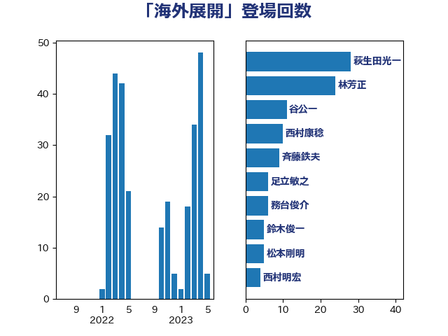

単語「海外展開」

| 萩生田光一 | 自由民主党 | 35 回 |
| 林芳正 | 自由民主党 | 13 回 |
| 梶山弘志 | 自由民主党 | 12 回 |
| 小泉進次郎 | 自由民主党 | 8 回 |
| 赤羽一嘉 | 公明党 | 7 回 |
| 加田裕之 | 自由民主党 | 6 回 |
| 武田良太 | 自由民主党 | 6 回 |
| 茂木敏充 | 自由民主党 | 6 回 |
| 足立敏之 | 自由民主党 | 6 回 |
| 安達澄 | 無所属 | 5 回 |
| 岩渕友 | 日本共産党 | 5 回 |
| 野上浩太郎 | 自由民主党 | 5 回 |
| 中野洋昌 | 公明党 | 4 回 |
| 斉藤鉄夫 | 公明党 | 4 回 |
| 熊田裕通 | 自由民主党 | 4 回 |
| 菅義偉 | 自由民主党 | 4 回 |
| 中川康洋 | 公明党 | 3 回 |
| 末松信介 | 自由民主党 | 3 回 |
| 阿部司 | 日本維新の会 | 3 回 |
| 務台俊介 | 自由民主党 | 2 回 |
| 山口晋 | 自由民主党 | 2 回 |
| 渡辺猛之 | 自由民主党 | 2 回 |
| 笠井亮 | 日本共産党 | 2 回 |
| 笹川博義 | 自由民主党 | 2 回 |
| 遠藤良太 | 日本維新の会 | 2 回 |
| 麻生太郎 | 自由民主党 | 2 回 |
| 三浦信祐 | 公明党 | 1 回 |
| 中西祐介 | 自由民主党 | 1 回 |
| 中野英幸 | 自由民主党 | 1 回 |
| 国光あやの | 自由民主党 | 1 回 |
| 塩崎彰久 | 自由民主党 | 1 回 |
| 大島敦 | 立憲民主党 | 1 回 |
| 小宮山泰子 | 立憲民主党 | 1 回 |
| 小林鷹之 | 自由民主党 | 1 回 |
| 小熊慎司 | 立憲民主党 | 1 回 |
| 山口那津男 | 公明党 | 1 回 |
| 岡本あき子 | 立憲民主党 | 1 回 |
| 岸田文雄 | 自由民主党 | 1 回 |
| 森まさこ | 自由民主党 | 1 回 |
| 武部新 | 自由民主党 | 1 回 |
| 河野義博 | 公明党 | 1 回 |
| 浜野喜史 | 国民民主党 | 1 回 |
| 田畑裕明 | 自由民主党 | 1 回 |
| 福田達夫 | 自由民主党 | 1 回 |
| 穀田恵二 | 日本共産党 | 1 回 |
| 藤巻健太 | 日本維新の会 | 1 回 |
| 里見隆治 | 公明党 | 1 回 |
| 鈴木俊一 | 自由民主党 | 1 回 |
| 鎌田さゆり | 立憲民主党 | 1 回 |